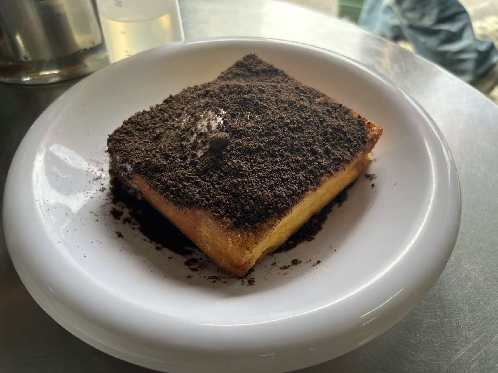
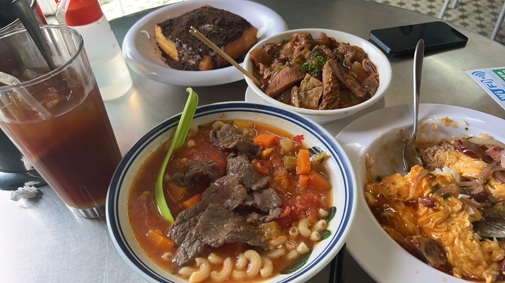
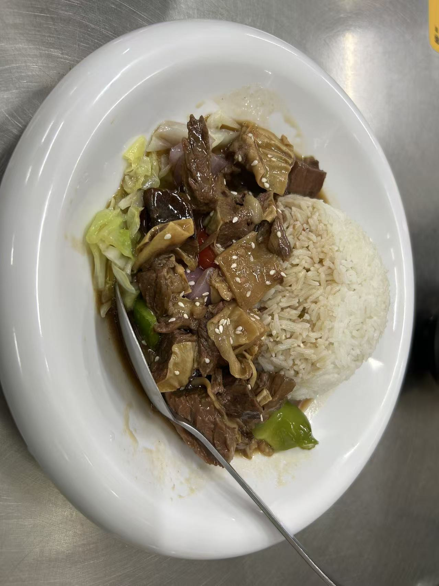
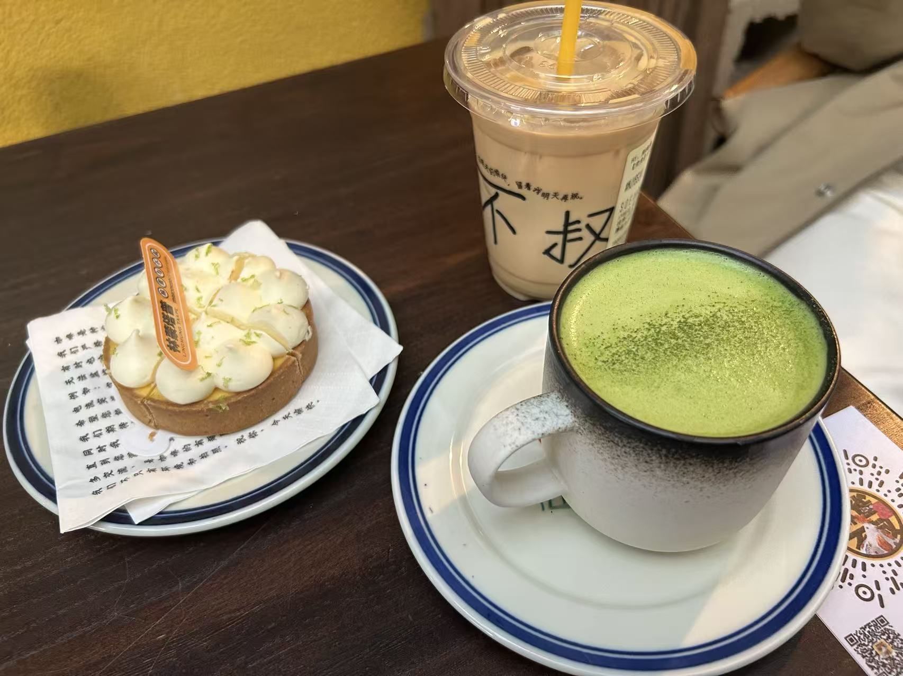
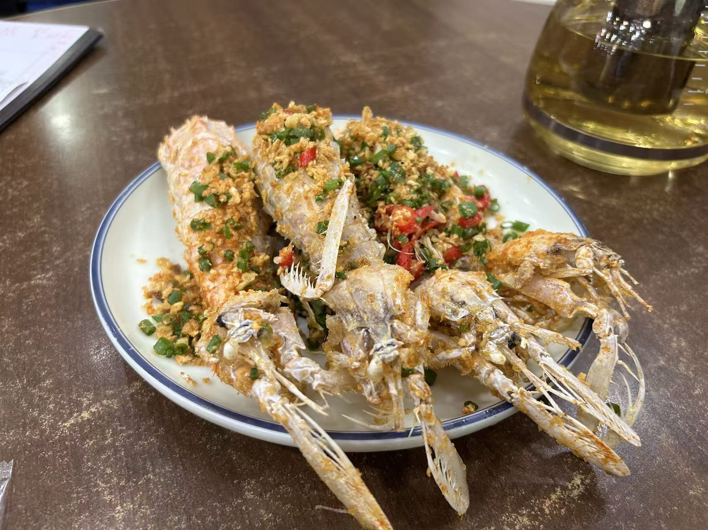

珠海 titlee
<style>
body {
font-family: Arial, sans-serif;
margin: 20px;
}
h2 {
margin-top: 40px;
margin-bottom: 10px;
border-left: 4px solid #4caf50;
padding-left: 10px;
color: #333;
}
.gallery {
display: grid;
grid-template-columns: repeat(auto-fill, minmax(260px, 1fr));
gap: 16px;
}
figure {
margin: 0;
}
figure img {
width: 100%;
border-radius: 8px;
display: block;
}
figcaption {
margin-top: 6px;
font-size: 14px;
color: #555;
line-height: 1.4;
}
</style>
</head>
<body>
<h1>珠海>zhuh
<!-- Day 1 -->
<h2>2025.12.24 初到珠海</h2>
<div class="gallery">
<figure>

<figcaption>
DD：颓记茶餐厅的漏奶华，第一次吃，太好吃了!奶味很足，配上奥利奥碎，口感很丰富 <br>
</figcaption>
</figure>
<figure>

<figcaption>
DD：小珩说爱吃他们家的番茄牛腩通粉，酸酸甜甜的味道不错！牛杂真的很好吃 <br>
</figcaption>
</figure>
<figure>
<figcaption>
DD：晚上我们排队坐落日飞车，在山顶上拍了照片。快上车的时候真的有点紧张！ <br>
</figcaption>
</figure>
</div>
<!-- Day 2 -->
<h2>2025.12.25 珠海第二天</h2>
<div class="gallery">
<figure>

<figcaption>
DD：太好吃了，我还要再吃一次颓记。这次又点了漏奶华，还吃了牛腩饭，不错 <br>
</figcaption>
</figure>
<figure>

<figcaption>
DD：找了一家评价不错的咖啡厅，我们两一路沿着海边骑共享单车过去，感觉很不错！咖啡和柠檬挞很不错，小珩很喜欢 <br>
</figcaption>
</figure>
<figure>

<figcaption>
DD：晚上吃了海鲜！这家海鲜真的挺好吃，比前一天吃的实惠多了！有小珩帮忙点菜，很难踩雷。谢谢小珩帮我剥虾！ <br>
</figcaption>
</figure>
</div>
</body>
</html>